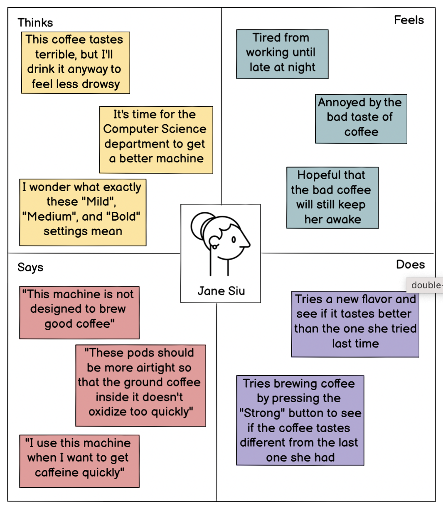
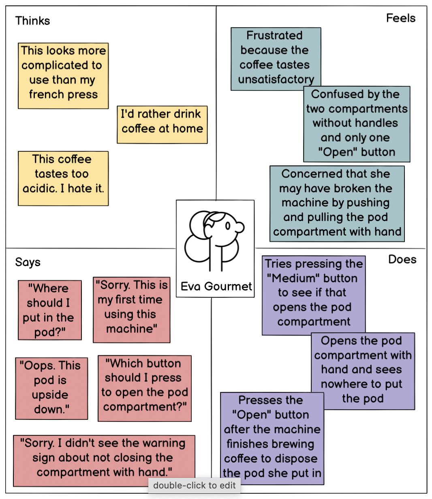

I interviewed 3 users, all of whom were graduate students at Brown about the coffee machine in CIT on the 4th floor. All three users drank coffee on a daily basis and had made coffee using their own tools.
Questions
Summary
Persona 1: Eva Gormet
Eva is a first-year masters student who has never used the CIT coffee machine and is picky about how her coffee tastes and smells.
Persona 2: Jane Siu
Jane is a second-year PhD student who uses the coffee machine on a daily basis although she doesn`t like the taste and smell of its coffee.
Eva discovers a coffee machine in CIT and wants to get some coffee from it.
She has never used the machine before and is not sure how it works.
Another graduate student who was near Eva tells her that the machine works with coffee pods.
Eva finds a coffee pod and tries to figure out where to put in the pod. She tries pressing the "Open" button.
Pressing the "Open" button opens the pod compartment.
Eva puts in her coffee pod but realizes that it's upside down.
Eva closes the pod compartment with hand and sees the warning message under it telling her not to do so. She hopes she didn't break the machine.
Eva isn't sure what exactly "Mild", "Medium", and "Strong" settings mean. She tries pressing "Medium".
Eva drinks the coffee the machine made. She hates the coffee.